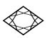
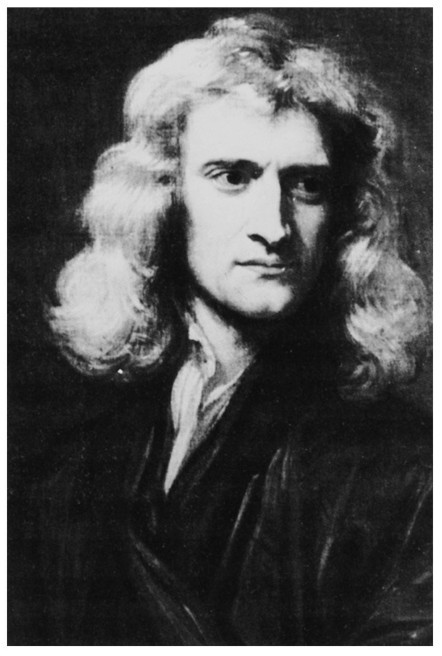
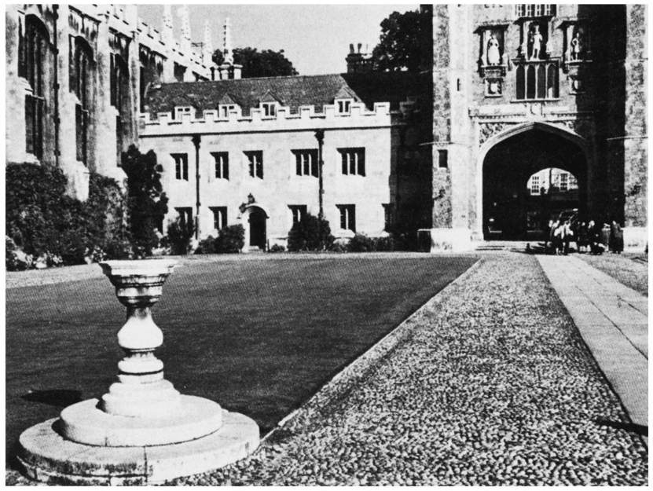
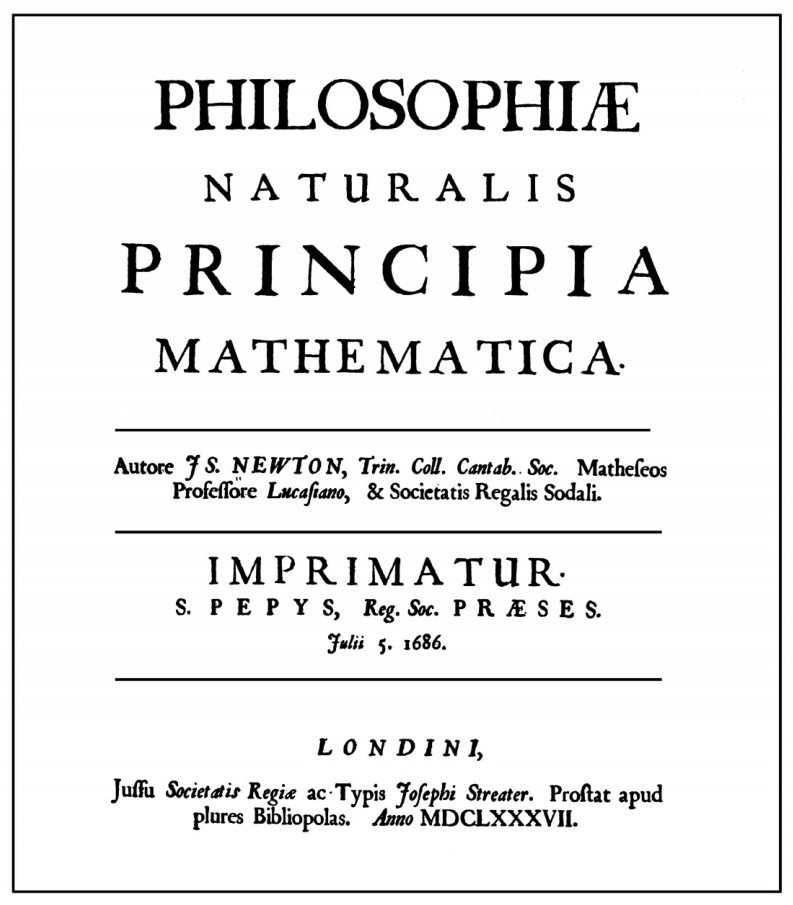
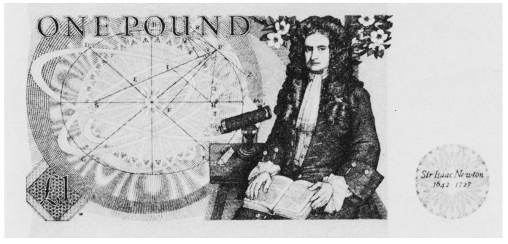

第一章正值伯尔尼大学开始放假的7月下旬，哈勒尔教授飞往加利福尼亚大学圣巴巴拉分校去参加一个会议。他提前离开伯尔尼是想途中在伦敦拜访几个朋友。在到达伦敦的当天，他抽空瞻仰了威斯敏斯特教堂里牛顿的陵墓。伫立在纪念碑前，哈勒尔阅读了这样的墓志铭：
人们应该感谢那些生活在他们之中并为全人类增光的人。 [1]
这句话表达了牛顿的英国同胞对他保持至今的崇敬和赞美。牛顿1642年12月24日诞生于林肯郡的伍尔斯索普——这年（按照儒略历）是他伟大的意大利同行伽利略逝世的一年。牛顿1727年3月20日逝世于伦敦。
牛顿思想对于我们世界观的发展的意义是难以估量的。不论是在牛顿之前还是在牛顿之后，没有一位自然科学家在决定自然科学和技术的发展方向这方面做得如此之多，也许爱因斯坦是个例外。甚至诗人们也对牛顿思想的清晰和敏锐有着深刻的印象，谨以蒲柏（Alexander Pope）的著名诗句为证：
自然和自然律全被黑夜掩藏，
上帝说：让牛顿降临吧！
于是一切都有了光亮。
既然打算在英国度周末，哈勒尔就决定去参观牛顿工作过的地方，剑桥的三一学院，它位于伦敦东北大约50英里（约80千米）处。在一个明媚的夏日星期天，他来到了剑桥。步行不长的一段路穿过这座小城后，他就到达了三一学院。他很快就发现，在主门左边一座小小的朴素建筑就是牛顿曾经长期生活和工作过的地方。

图1.1 46岁时的牛顿，内勒（Godfrey Knelleer）画的半身像，是这位伟大物理学家的最早的画像。［承蒙朴次茅斯勋爵（Lord Portsmouth）和朴次茅斯遗产管理处惠允。］
那个星期天早上，三一学院的大四方院里空无一人。哈勒尔独自坐在四方院中央的喷泉台阶上，沐浴着阳光并享受着宁静。没有一个人打扰他。他只看见一个中年男子，也许是科学家抑或是学院的教员，悠闲地穿过大门，走进牛顿的故居。
哈勒尔力图想象在牛顿时代这里的事物是怎样一番景象。它也许与现在没有多大差别。几个世纪以来，三一学院不曾有多大改变。牛顿是1661年考上剑桥并入学三一学院的。他的主要兴趣是数学、天文学、化学和（不应忘掉的）神学研究。作为一个学生，牛顿给当时任卢卡斯数学教授［以卢卡斯（Henry Lucas）的名字命名，他给这个席位捐赠了基金］的巴罗（Issac Barrow）留下了深刻的印象。巴罗的学识并不局限于自然科学和数学，他也对语言学和宗教问题保持浓厚兴趣。他曾经是一位传道士，也曾是一位具备拉丁语、希伯来语和阿拉伯语等必备知识的希腊语教授。他也教过光学和数学。

图1.2 当时身为三一学院教授的牛顿，住在紧连着附属教堂的学院主门的一座小楼里。他的房间在紧挨着大门的二楼。
毋庸置疑，巴罗对他的年轻学生牛顿的发展影响巨大。通过巴罗，牛顿不仅渐而通晓那个时代的科学思想，而且他晚年对宗教产生非同寻常的浓厚兴趣也在很大程度上归因于巴罗的引导。特别值得一提的是，巴罗让牛顿了解了斯宾诺莎（Spinoza）和霍布斯（Hobbes）的思想。
23岁那年，牛顿获得了哲学学士学位。他本想留在剑桥研究数学，但因故不得不推迟这个计划。1665年，英国遭到了腺鼠疫的侵袭。当局为了减少这种传染病传播的危险而关闭了所有的大学。牛顿回到了伍尔斯索普他母亲的家，后来事实证明这段时日却成了牛顿最多产的时期。在一年半的时间里，他不仅发展了微分学和积分学的基本思想，还发展了经典力学的基本思想。他系统地阐述了万有引力定律——有质量物体间的普遍吸引。该定律一直是物理学的支柱之一，直到250年后，爱因斯坦对这个定律从根本上加以崭新的诠释。
牛顿在伍尔斯索普住留期间所萌生的丰富思想，只能归结为他那异常集中的注意力。塞格雷（Emilio Segrè）是这样评价牛顿的：“他那特有的天赋乃是这样一种才能，即在他的脑海中总是不停地抓住一个纯粹的智力问题，直到他看透它为止。我想，他的杰出就在于他那与生俱来最强大的、最持久的直觉的力量。任何一个尝试过纯科学或哲学思辨的人都知道，如何才能在你的脑海里瞬时抓住一个问题并运用你的全部注意力去洞察它，而它却如何会在你的关注范围内消失或逃逸，让你觉得脑海一片空白。我相信，牛顿能够在他的脑海里抓住一个问题几小时、几天、几星期不放，直到弄清楚它的秘密。” 2
在自然科学史中，在如此短暂的时间里产生如此丰富思想的其他范例只有一例。此例发生在1904—1905年，当时爱因斯坦提出了空间和时间的相对性的基本思想，此乃牛顿思想的重要延续。同时，爱因斯坦也成了现代量子理论的奠基者之一。
回到剑桥之后，牛顿给巴罗的印象竟如此深刻，以至于这位教授在征得牛顿允许后决定把牛顿的一些研究结果提交给皇家学会的会员们。该学会于1660年在伦敦创立。于是，牛顿的名字第一次在剑桥之外为人所知。当巴罗1669年从卢卡斯数学教授席位上退休时，他必定发挥了影响力，27岁的牛顿被选作他的继任者。
牛顿的第一次演讲论述的是光学研究。除了理论研究之外，他利用他在三一学院的房间用各种仪器做实验，这些仪器大多是他自制的。尽管牛顿当今的声望是来自一些物理学理论的创立，但他也是位出色的实验家和能工巧匠。现存的有关这点的明证之一就是他的反射望远镜，它被保存在皇家学会的收藏室里，其镜片就是牛顿亲手打磨的。
牛顿的第一篇科学著作发表于1672年皇家学会的《自然科学会报》（Philosophical Transactions of the Royal Society ），论述的是光学，特别是光的衍射（diffraction）与光谱颜色二者之间的关系，这种关系是牛顿自己发现的。这个发现后来表明对澄清光的物理本性至关重要。
200余年后，牛顿的这个发现再次反映到光的本性上，引发了一场物理学观念的革命。这场革命是由爱因斯坦发动的。爱因斯坦在牛顿著的《光学》（Opticks ）新版序言中阐述了他对牛顿的研究的看法：“幸运的牛顿，幸运的早期科学！只要有时间和雅兴阅读这部著作的人，都能重温伟大的牛顿在他早年的一些奇妙的经历。对他而言，大自然就是一本打开的书，他能毫不费力地看懂每一个字母。他所运用的给所观察的现象带来秩序的一些概念均直接来自经验，它们像玩偶般一个接着一个从他所设计的精致的实验中涌现出来，并被他描绘得淋漓尽致。他系实验家、理论家、机械工于一身，最后但并非最不重要的一点是，他还是个喜欢作秀的人物。他强大、自信、孤傲地屹立在我们面前；哪怕是最琐碎的细节，每个词语和每个数字都显示了他的创造性和精确性。”
牛顿只是在很勉强的情况下才发表他的研究结果，他通常要拖到隐隐出现与其他科学家发生有关优先权冲突的危险时刻。足以使天文学家哈雷（Edmund Halley，1656—1742）脸上有光的是，他说服了牛顿把自己的思想和成果公开发表在一本重要的专著中。1687年，牛顿的巨著《自然哲学的数学原理》（Philosophiae Naturalis Principia Mathematica ）问世了。
这本书通常简称为《原理》，是自然科学的奠基石之一。它奠定了力学的基础并因此促进了技术的发展。牛顿在他的序言中阐述了他探讨自然现象的方法：“从运动现象来研究自然力，而后从这些力去论证其他现象。”自《原理》问世300年以来，我们已经见证了牛顿研究方法的惊人的成功。
这部《原理》由3卷组成，以牛顿力学的基本概念的著名定义为先导，后面我将详细讨论它们。
第Ⅰ卷是关于各种各样的力学问题，尤其集中讨论了在有心力的作用下刚体的运动。所谓有心力，就是力的作用方向朝着一个中心点，比如源自太阳的吸引力，它决定了行星的运动。
第Ⅱ卷论述的是应用物理学。除了其他问题，牛顿还研究了在诸如空气和水这样的介质中刚体的运动。例如，当一个刚体穿过这类介质时会遇到什么样的阻力呢？在这方面，牛顿建立了一个新的数学分支，即变分法。它对物理学的重要性直到一个世纪之后才为人所知。第Ⅱ卷结尾包含了对波动理论的讨论，牛顿把讨论局限于声波和机械波在水中的传播。
名为“世界体系”（The Systems of the World）的第Ⅲ卷包含了许多天文现象。牛顿以他的重力吸引理论为基础，解释了处于太阳引力场中的行星的运动——这一科学的精心杰作为牛顿赢得了普遍的声誉。
在《原理》的结尾，牛顿是这样谈及他的引力理论的：
到目前为止，我们借助于引力的作用已经解释了天空和我们的海洋中的一些现象，但还无法确定这种作用的起因。可以肯定的是，引力作用必定能直达太阳和行星的核心而丝毫不会减弱，它并不依赖于被作用质点的表面积（机械作用通常会如此），而是随物体所含物质的多少而变化。引力作用也能在各个方向上传到无穷远处，并且总是按反比于距离的平方而减小。太阳的吸引力是由组成太阳这个物体的若干质点的引力组合而成的，其强度精确地反比于距离的平方，离太阳越远就越小……但直到现在，我还不能从这些现象中找到引力的这些性质的起因，也构造不出任何假说［在拉丁语原始版中，出现于此的是“假说不等于事实”（Hypotheses non fingo ）的名言］；不能从现象演绎出来的学说就称其为假说。对于假说，不论是超自然的还是自然的，不论它具有神秘的还是机械的特性，在实验哲学中都没有地位。在实验哲学中，特殊命题是从现象中推断出来的，而后按照归纳法使之一般化。于是，不可入性、运动性、物体的冲力、运动定律和引力定律都被一一发现。引力确实是存在的，而且是按照我们业已阐释的定律起作用的，能充分地解释天体和我们的海洋的所有运动，对我们而言这就够了。 3

图1.3 1687年出版的牛顿的最重要的著作《原理》的封面。加利福尼亚大学伯克利分校班克罗夫特（Bancroft）图书馆藏。
正如牛顿在他的《原理》中所阐明的，牛顿力学的成功立即在英国和欧洲大陆产生了直接的影响。例如，伏尔泰（Voltaire）在他的演讲和著作中就多次提到牛顿的思想。
牛顿的天体力学阐释了行星运动的每一个细节。在他逝世后百余年，天王星这颗行星被发现了，这是牛顿天体力学取得的一个特别的胜利。这颗行星的轨道在细节上曾一度出现与他的理论预言不一致。在对该轨道做精确测量时所发现的微小反常，似乎与牛顿的万有引力理论不相容。1846年，勒威耶（Urbain J. J. Le Verrier）和亚当斯（John Couch Adams）各自独立地提出了一种可能的解释，与牛顿的理论不矛盾。如果假定存在着一颗比天王星还要远的行星，这个新天体的引力作用就能够解释天王星的轨道反常。勒威耶和亚当斯能够定出这颗新行星的准确位置，他们猜想它是以45亿千米的半径围绕太阳旋转。就在同一年，这颗新行星被德国天文学家加勒（Johann Gottfried Galle）首次观测到，并被命名为海王星。这是牛顿理论能够解释行星运动的最微小细节的又一个实证。

图1.4 印有艾萨克·牛顿爵士肖像的1英镑旧英币，他可能是这家造币厂最有声望的总监。票面上他与他所改进的望远镜、他首次用来做光谱分析的棱镜、环绕太阳的行星椭圆轨道的图像被画在了一起。票面上也印有苹果树的枝杈。据轶事传闻，他是看到苹果从树上往下掉时才萌生万有引力的思想。
也许是牛顿的力学理论太成功的缘故，其基础很长时间都没有受到严格的检验。毋庸置疑，牛顿本人对他的理论中的一些基本要素，尤其是对空间和时间的思想，一直持批评态度。然而，由于他在阐述中总是小心谨慎，也由于他在著述中坚持“假说不等于事实”的座右铭，即便他不真的这样想，也不曾留下任何质疑自己理论的痕迹。
不是所有的物理现象都能用牛顿的力学理论来解释，这一点在19世纪已变得清楚了。某些电磁现象简直不能与之相符合。在19世纪末，原子物理学这门新生的科学就无法用力学模型来解释，比如微粒和气态物质的某些稀奇古怪的性质就难以理解。
在《原理》出版后大约220年，牛顿的世界观的根基最终动摇了。1905年，伯尔尼专利局一名26岁的雇员爱因斯坦发表了他的关于空间和时间的内部结构的新思想。这些新思想等于是对力学基础的一场革命性改造。尽管牛顿物理学被证明不是错的，而且在很多情况下接近实在（reality），但它现在仅仅被看作爱因斯坦力学的一级近似。
在牛顿的《原理》一书的初版出版之后，他的名字传遍了欧洲，他很快被誉为健在的最伟大的科学家。1696年，英格兰国王任命他为皇家造币厂的总监，那是一个非常重要的部门。（牛顿要负责英格兰货币体系的改革。）后来他升任该厂的主管。在那个职位上，他被冠以艾萨克·牛顿爵士而出现在1英镑纸币上——因他对造币厂的贡献，1705年被安妮女王（Queen Anne）封为爵士。
在牛顿一生的最后24年里，他一直是皇家学会的会长。这个学会是英国最古老的科学协会，1645年非正式成立，著名哲学家和自然科学家每周举行例行的聚会。1660年，国王查理二世（King Charles Ⅱ）正式承认了它。牛顿用强硬的手腕控制着这个学会，进而左右着英国所有的科学生活。没有牛顿的认可，谁也不能成为新会员。
注解：
[1] 墓刻为拉丁语Sibi gratulentur morlales tale tantumque existisse humani generis decus 。——译者